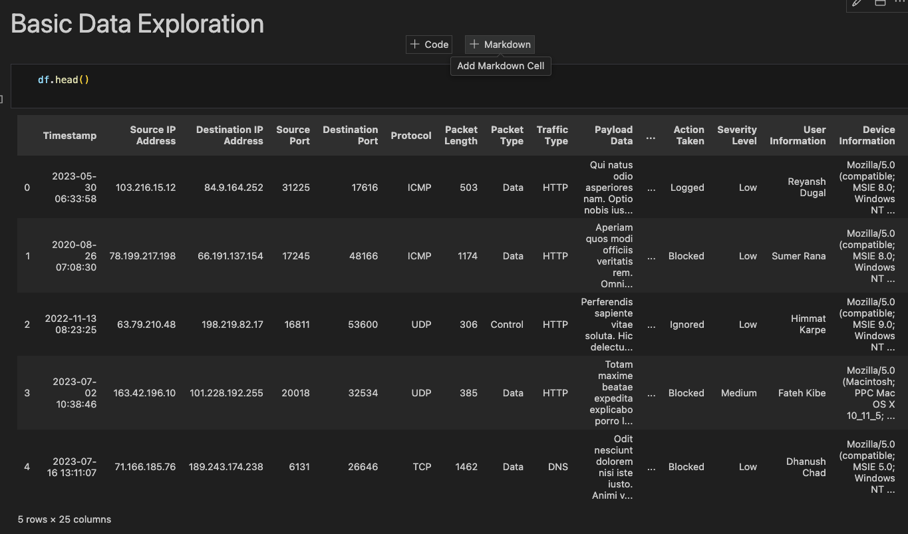
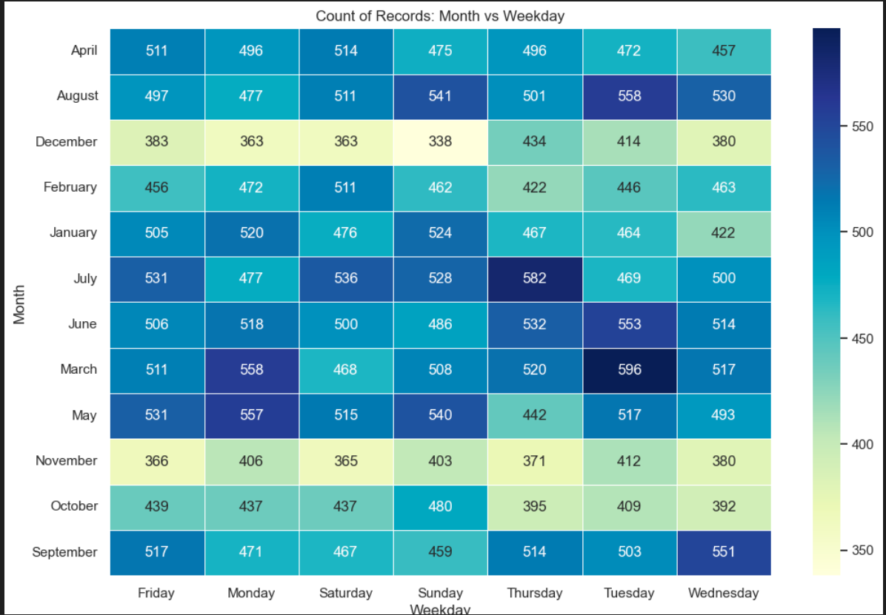
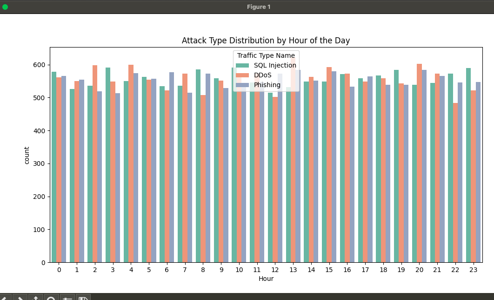
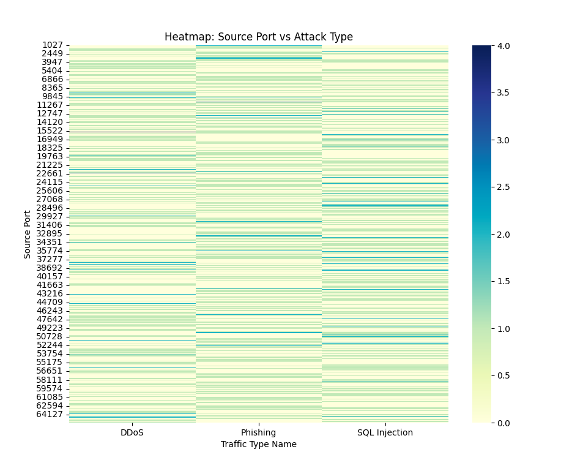
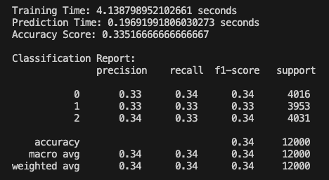
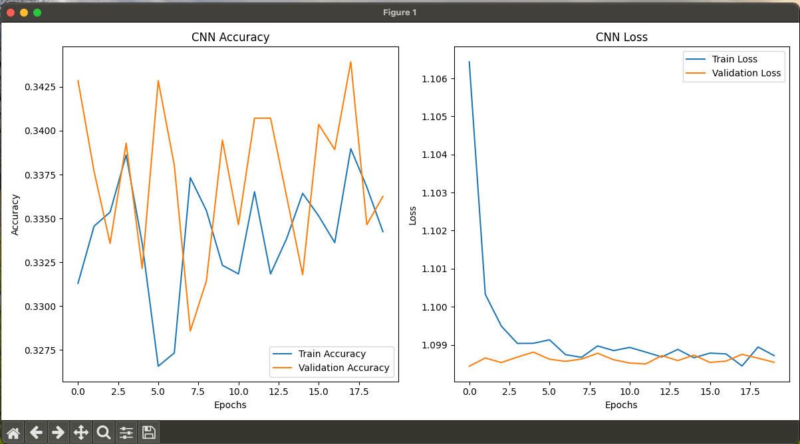

Objective
Explore cybersecurity-event characteristics and implement multiple classification approaches for comparative analysis.
AI & Machine Learning • Security Analytics • Python
An Advanced Information Security (CSEC 5327) semester project exploring a 40,000-record cybersecurity dataset through statistical analysis, visualization, Random Forest classification, dense neural networks, and a 1D convolutional neural network.
Explore cybersecurity-event characteristics and implement multiple classification approaches for comparative analysis.
40,000 records across 25 fields, including network, traffic, attack, severity, device, firewall, and IDS/IPS information.
Random Forest, a dense neural network, and a 1D-CNN with evaluation, timing, and comparison routines.
13,428 records
13,307 records
13,265 records
These values are transcribed from the execution output preserved in the submitted semester report.
| Model | Training | Prediction | Test accuracy |
|---|---|---|---|
| Random Forest | 4.14 s | 0.20 s | 33.52% |
| Dense neural network | 22.03 s | 0.16 s | 33% |
| 1D-CNN | 10.38 s | 0.17 s | 33% |
The recorded Random Forest report shows macro and weighted precision, recall, and F1 of approximately 0.34 on 12,000 test records. All three captured runs performed near one-third accuracy; the clearest measured distinction is training efficiency, not an accuracy advantage.
Six selected figures highlight the dataset, analysis, and recorded model results. All 30 original report figures remain available in the project repository.






The source folder contains the original dataset, three progressive analytics scripts, and the focused Random Forest test script.